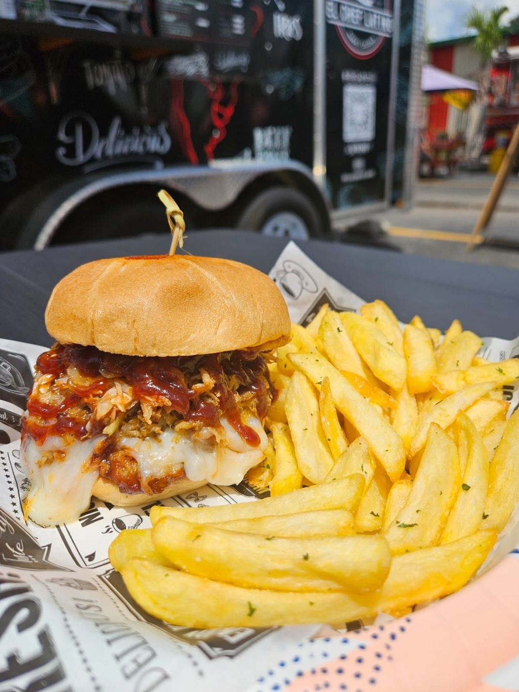

Latin flavor, served hot from the window
Find us at the Kissimmee food truck park on W Irlo Bronson Hwy. 4.9★ from 35 Google reviews.
Call (347) 632-7180See the menu
Tonight’s board
Yaroa con chicharrónA house favorite, loaded and hot.
Fried fish dinnerCrispy, fresh and served hot.
EmpanadasGolden and made to order.
Chicharrón plateCrunchy pork, Latin-style.
Chicken tacosFresh and full of flavor.
Fresh drinksCustomers rave from the drinks to the food.
From the line
Absolutely DELICIOUS!! My family had the Fried fish dinner, empanadas and the chicharon plate. Everything was fresh and served hot!!
Can I do 7 out of 5 stars? My go to every weekend 🤩🤩 If coming to Food Truck Heaven this is a no brainer! 🙂↕️
You have got to come try this out! Food is delicious and fresh! I usually stop by here 2-3 times a week. That’s how great they are!
So good everything has amazing flavors owners are so nice love this place!